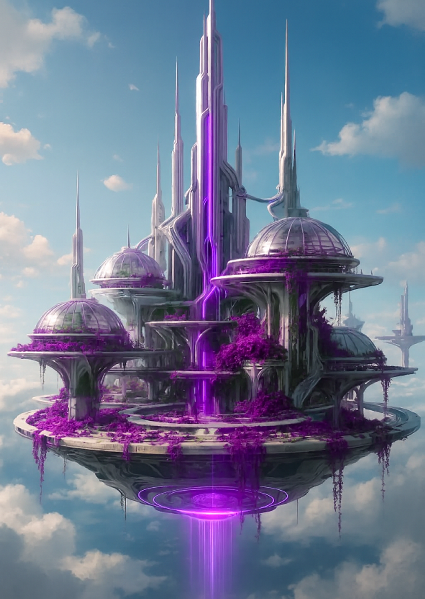

The Word That Opened the Sky: Lukey and Nyari
Posted on November 25, 2025 · Category: TAOLB Universe Stories

The night was still, except for the hum of stars. Lukey Buke leaned closer to Nyari, the little purple alien child whose eyes shimmered like polished obsidian. His hand cupped around his mouth, his breath warm against the cool air.
He whispered a single word.
“Elyndor.”
The moment the word left his lips, the world shifted. The moss beneath them glowed faintly, as if remembering something ancient. The stars above rearranged themselves, forming patterns Lukey had never seen before. Nyari’s black eyes widened, reflecting the new constellation that pulsed like a heartbeat.
Her voice trembled as she repeated it: “Elyndor… you remembered.”
The clouds parted, revealing the silhouette of spires, tall, spectral towers drifting across the sky. The Forbidden City of Aetherwyn shimmered faintly, as if stirred awake by the sound of its forgotten name.
Nyari reached for Lukey’s hand, her fingers trembling. “You’ve spoken the word of the First Dreamers,” she whispered. “Now the gates will begin to stir.”
And then, before Lukey could ask what it meant, Nyari’s form flickered. Her outline blurred, her presence fading like mist in the morning sun.
Lukey gasped, clutching the word in his chest. Elyndor. The word that opened the sky.
But Nyari was gone.
What Comes Next?
What does Elyndor mean? Why did Nyari vanish after hearing it? And what happens when the gates of Aetherwyn begin to stir?